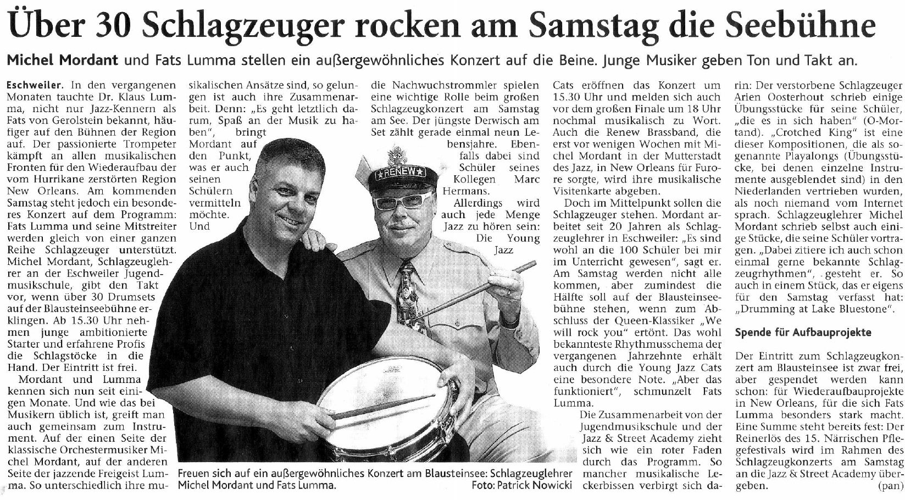
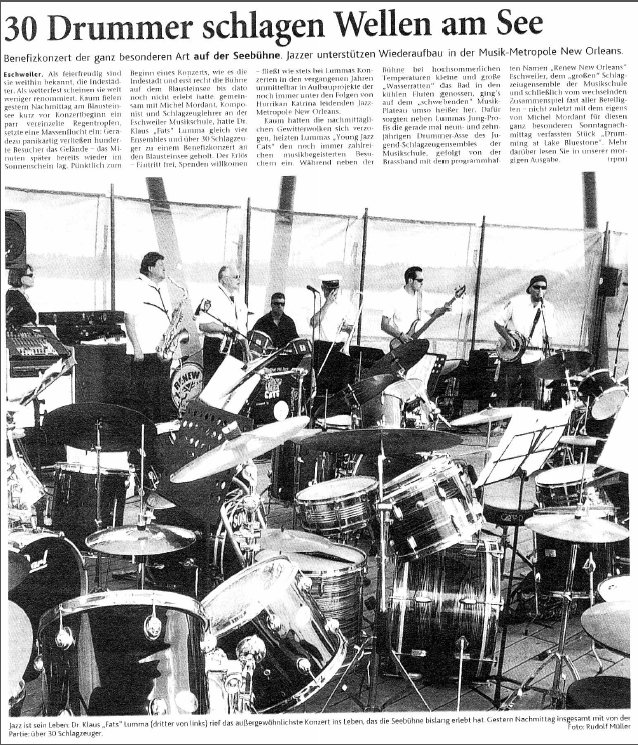
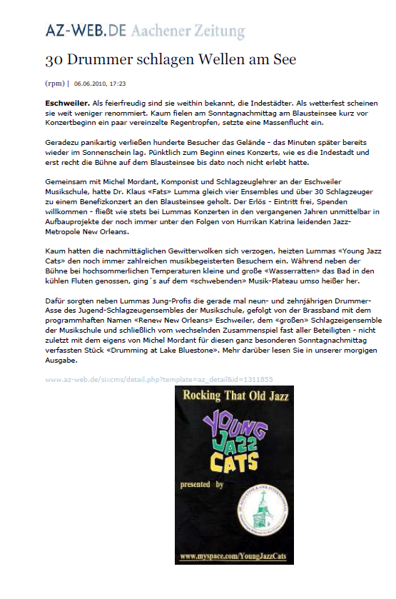

Duitsland · opgericht in 1996
Slagwerkensemble Jugendmusikschule Eschweiler
Opgericht op 5 juli 1996 door Michel Mordant. In 2019 vierde hij dat hij meer dan dertig jaar slagwerkdocent is aan de muziekschool in Eschweiler.
- 2027
17 januari · Heinsberg (in voorbereiding)
- Brazilian Street Dances — T. O’Connor
- You’re So Cool — H. Zimmer, arr. F. Kessels
- Sabre Dance — A. Khachaturian (arr. J. Moore, M. Mordant)
Samen met het JuMu-ensemble (Burkhard, Tobias, Fynn, Jonas, Tom, Arne): Drummers Go Latin; The Winding River (T. O’Connor); Pirates of the Caribbean (Hans Zimmer, arr. M. Mordant).
23 januari · Heinsberg (in voorbereiding)
Jugend Musiziert: Drummers Go Latin; The Winding River (T. O’Connor); Pirates of the Caribbean (Hans Zimmer, arr. M. Mordant).
- 2026
10 oktober · Adams
Percussion & Friends: Egyptian Reggae (J. Richman); You’re So Cool (H. Zimmer, arr. F. Kessels); Sabre Dance (A. Khachaturian, arr. J. Moore, M. Mordant).
6 september · Blausteinsee
Familiedag van de stad Eschweiler aan de Blausteinsee.
16 juli
Voorspeelavond van de muziekschool (Vorspiel).
januari – maart
Jugend Musiziert, drumstel (pop): drie leden doen mee.
- 2025
18 december
kerstconcert: Brazilian Street Dances, Sabre Dance, You’re So Cool.
januari – maart
Jugend Musiziert, slagwerk / mallets: vijf leden doen mee.
- 2024
23 oktober · Adams
Percussion & Friends, in samenwerking met het slagwerkensemble Broeksittard. Foto
2 oktober
Nacht der offenen Kirchen: You’re So Cool (H. Zimmer, arr. F. Kessels); Rainbows (A. Gomez).
- 2023
- Concert aan de Blausteinsee
- Concert ‘Am Markt’: Jumpin’ Five (1942) van W. Ludwig
- Concert voor de Dag van de Vrijwilliger (Tag des Ehrenamtes), Eschweiler: The Entertainer
- 2020
Coronajaar: online slagwerkwedstrijd.

- 2019
Meer dan 30 jaar slagwerkles in Eschweiler. Persberichten (PDF)

- 2010
‘Drumming’ aan de Blausteinsee — 7 juni, met aandacht in Super Sonntag en de Eschweiler Filmpost. Programma (PDF) · Affiche (PDF) ·

“30 Schlagzeuger rocken am Samstag die Seebühne” 
“30 Drummer schlagen Wellen am See” 
Eschweiler Filmpost 
“Schlagzeuger lassen es auf der Bühne krachen” 
Super Sonntag — “Drums as Drums can” 
Aachener Zeitung (az-web.de) - 2009
Het ensemble · Eschweiler Nachrichten, 19 juni 2009 · Concertaffiche, 14 juni 2009
- Mission Impossible — Lalo Schifrin, arr. Will Rapp
- Drumduet — Maarten Rongen
- A La Turca — W. A. Mozart, arr. Michel Mordant
- Dreaming — Leo Ouderits
- 2008
Dit jaar geen ensemble: geen repetitieruimte beschikbaar door de invoering van de Ganztagsschule.
- 2006
14 mei — concert op de PAS Day of Percussion, Maastricht (Nederland): Centurion March (M. A. Brand); Minimize (M. Mordant); William Tell Overture; Sabre Dance.
22 juni — concert.
- 2005
Timo Coutura.
- 2004
- Concert, 24 juni, Eschweiler (Duitsland)
- Concert, 5 november, Voerendaal (Nederland)
- 2003
‘Jugend Musiziert’, 1 februari, Wuppertal (Duitsland):
- Interplay — G. Whaley
- Minimize — M. Mordant
- Drummers Go Latin — P. Hudec
- Trommeldans — L. Ouderits, arr. M. Mordant
- 2002
Pers: Eschweiler Nachrichten, 24-12-2002 · Eschweiler Nachrichten, 24-01-2002 · Super Mittwoch, 27-02-2002 · AZ Eschweiler, 26-01-2002
Concert op de Marimba Contest 2002 — programma van het openingsconcert, 17 augustus, Cultureel Centrum Hasselt (België).
Concertzaal van de muziekschool Stolberg (Duitsland): The Winding River (Thomas O’Connor); Alla Turca (KV 331, W. A. Mozart, gearrangeerd voor marimba-ensemble door M. Mordant); Dreaming (L. Ouderits); Sabre Dance (A. Khachaturian / J. Moore).

Mozarts Alla Turca (KV 331), gearrangeerd voor marimba-ensemble door Michel Mordant. - 2000
Concertzaal ‘Patternhof’, Eschweiler
The Winding River (Thomas O’Connor); Drummers Go Latin (Peter Hudec); A La Samba (Mitchell Peters); Allegretto (W. A. Mozart); Mau-Mau Suite (T. Davis); Sabre Dance (A. Khachaturian / J. Moore).
Eschweiler Zeitung: 8 november 2000 · 7 november 2000

Johannes Arnouts, Timo Coutura, Oliver Lamm, Volker Kupper, Christoph Frings en Michel Mordant. Vibrafoon: Lucas Stolberg. 17–22 maart · Keulen
‘Jugend Musiziert’ (Landeswettbewerb): Drummers Go Latin (Peter Hudec); A La Samba (Mitchell Peters); The Winding River (Thomas O’Connor); Praça Mauá (Heinz von Moisy).
24 januari · Mönchengladbach
‘Jugend Musiziert’ — hetzelfde programma. Eschweiler Zeitung: 1 februari 2000 · 28 januari 2000
- 1999
- Expositie ‘Schlucklick’, 19 november, Eschweiler: The Winding River; Drummers Go Latin; Allegretto (Mozart)
- Concert in Achel (België): The Winding River; Drummers Go Latin; Allegretto (Mozart)
- 1996